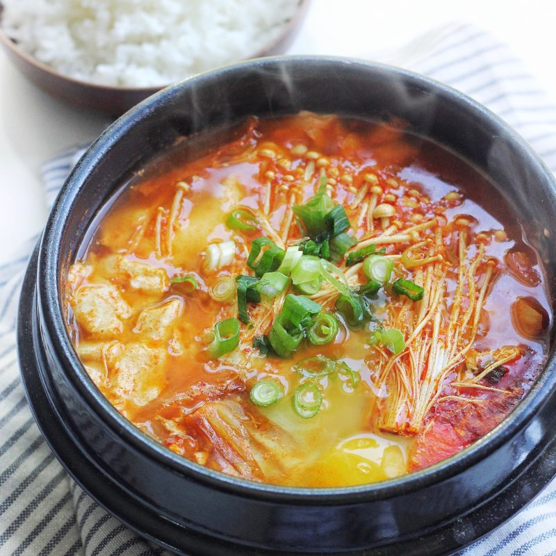

Kimchi Tofu Stew

Description
Korean stew made with soft tofu and kimchi.
Ingredients
- Kimchi
- Gochujang
- Chicken broth or water
- Enoki mushrooms
- Soft tofu
- Egg
- Green onions
Steps
- Add oil to pot. Once hot, add kimchi, gochujang, and chicken broth/water
- Once boiling, add soft tofu, mushrooms, egg, and green onions
- Serve with rice